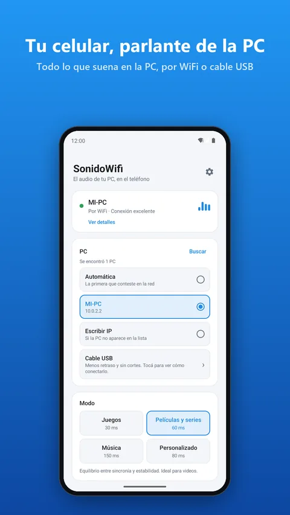
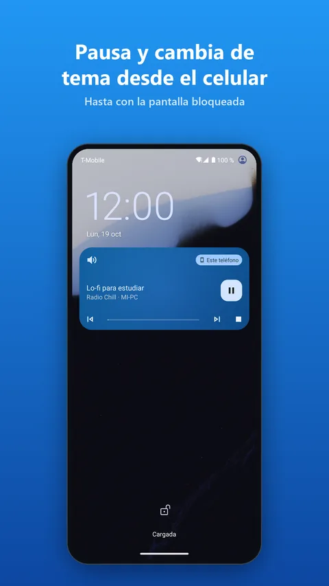
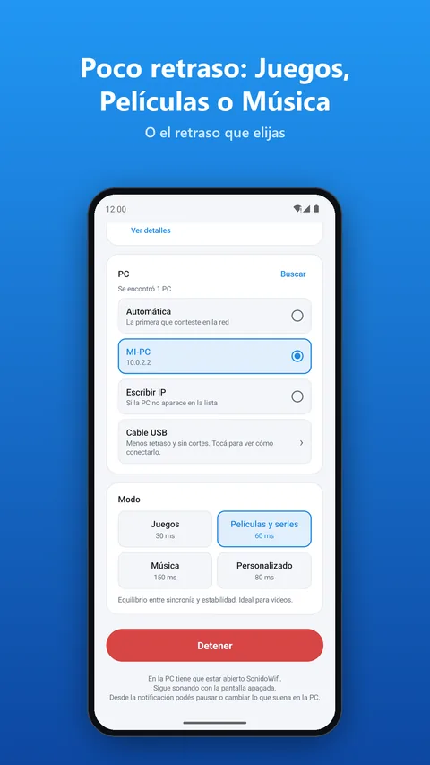
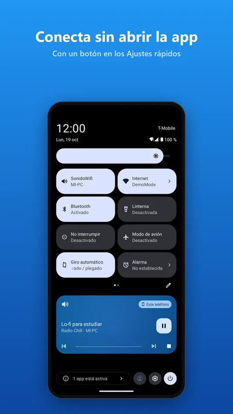
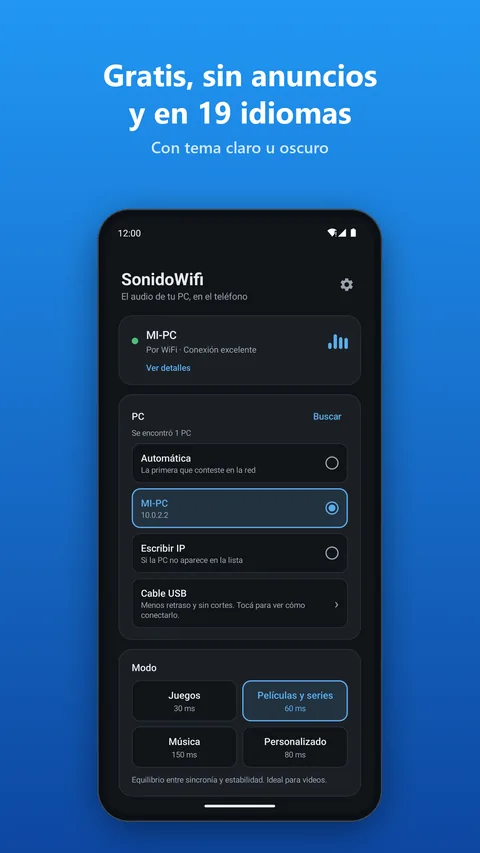
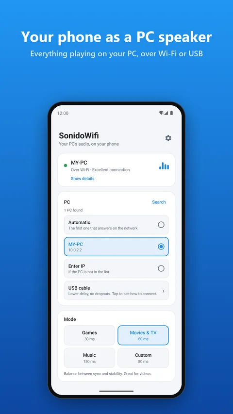
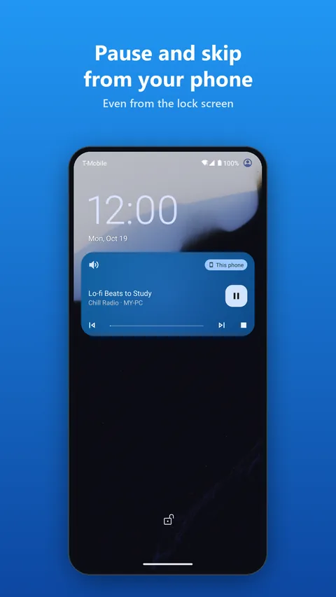
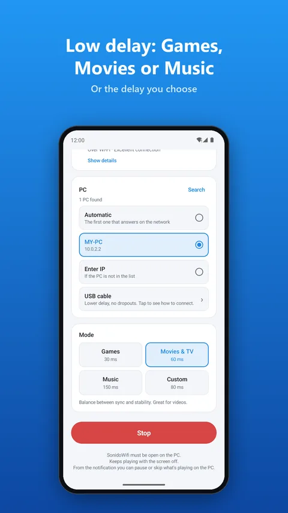
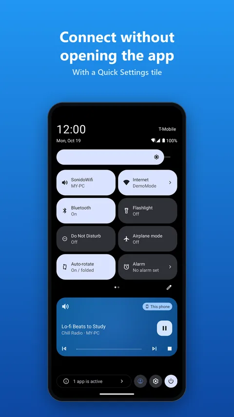
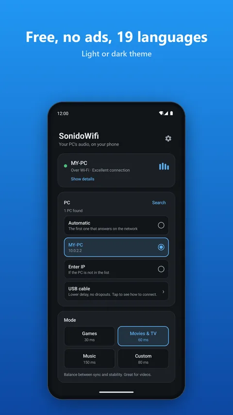

SonidoWifi
El audio de tu PC, en tu teléfono. Por WiFi o cable USB, con poco retraso. Gratis.
Your PC's audio, on your phone. Over Wi-Fi or USB cable, with low delay. Free.










1. Instalá la app en tu PC (Windows 10 u 11)
1. Install the app on your PC (Windows 10 or 11)
Es la que captura el sonido de la computadora y lo manda al teléfono.
It captures the computer's sound and sends it to the phone.
Con la descarga directa Windows puede mostrar "Windows protegió su PC": tocá Más información → Ejecutar de todas formas. Desde la Microsoft Store no aparece.
With the direct download Windows may show "Windows protected your PC": click More info → Run anyway. It doesn't appear when installing from the Microsoft Store.
2. Instalá la app en tu teléfono (Android 7 o superior)
2. Install the app on your phone (Android 7 or later)
O escaneá con la cámara del teléfono el código QR que muestra la app de la PC.
Or scan the QR code shown by the PC app with your phone's camera.
3. Conectá
3. Connect
- Abrí SonidoWifi en la PC.
- Con el teléfono en el mismo WiFi (o por cable USB con el anclaje USB activado), abrí SonidoWifi y tocá Conectar. O escaneá el QR de la PC: se conecta solo.
- Poné algo a sonar en la PC.
- Open SonidoWifi on the PC.
- With the phone on the same Wi-Fi (or via USB cable with USB tethering on), open SonidoWifi and tap Connect. Or scan the PC's QR code: it connects by itself.
- Play something on the PC.
- Todo el audio de la PCjuegos, películas, música, llamadas.
- Poco retrasomodos Juegos, Películas, Música o el retraso que elijas.
- WiFi o cable USBpor cable: menos retraso y el teléfono se carga.
- Controlá la PC desde el teléfonopausa, siguiente y anterior desde la notificación o la pantalla de bloqueo.
- Varios teléfonos a la vezcada uno con sus auriculares: ideal para ver una película sin molestar.
- Volumen extrapara el parlante del teléfono o auriculares que suenan bajo.
- Se conecta fácilencuentra la PC sola, o escaneá su QR. Y si algo falla, te dice qué revisar.
- Gratis y privadosin anuncios, sin cuentas, sin límites de tiempo. El audio no sale de tu red.
- All of the PC's audiogames, movies, music, calls.
- Low delayGames, Movies, Music modes, or the delay you choose.
- Wi-Fi or USB cableby cable: lower delay and the phone charges.
- Control the PC from your phonepause, next and previous from the notification or the lock screen.
- Several phones at onceeveryone with their own headphones, great for a quiet movie night.
- Extra volumefor the phone's speaker or headphones that sound quiet.
- Easy to connectfinds the PC by itself, or scan its QR code. If something fails, it tells you what to check.
- Free and privateno ads, no accounts, no time limits. Audio never leaves your network.
Preguntas frecuentes
¿Necesito Bluetooth o un cable especial?
No. Alcanza con que la PC y el teléfono estén en el mismo WiFi (la PC puede ir por cable al router). Si querés todavía menos retraso, usá el cable USB del teléfono con el anclaje USB.
¿Cuánto retraso tiene?
En modo Juegos el teléfono guarda como mucho 30 ms de audio, más lo que tarde tu red (por cable USB, casi nada). En Películas, 60 ms. Los auriculares Bluetooth del teléfono suman su propio retraso.
¿Puedo escuchar la PC con mis auriculares Bluetooth?
Sí: conectalos al teléfono y SonidoWifi lleva el audio de la PC hasta ellos. Sirve para PCs sin Bluetooth.
¿Gasta datos del celular?
No: el audio va por tu red local, no por internet. Sin comprimir usa unos 1,5 Mbps de WiFi; con la calidad Opus, 10 veces menos.
El teléfono no encuentra la PC
Abrí la ventana de la PC: si muestra un aviso del firewall, tocá «Permitir en el firewall». También podés escanear el QR de la ventana con la cámara del teléfono, que conecta directo. En el teléfono, «¿No aparece tu PC?» te muestra qué revisar.
¿Es gratis de verdad?
Sí: sin anuncios, sin cuentas y sin límites de tiempo. La compresión Opus y los varios teléfonos a la vez también son gratis.
¿Funciona en Mac, Linux o iPhone?
Por ahora la PC tiene que tener Windows 10 u 11, y el teléfono Android 7 o más nuevo.
FAQ
Do I need Bluetooth or a special cable?
No. The PC and the phone just need to be on the same Wi-Fi (the PC can be wired to the router). For even lower delay, use the phone's USB cable with USB tethering.
How much delay is there?
In Games mode the phone buffers at most 30 ms of audio, plus your network's delay (almost none over USB). In Movies mode, 60 ms. The phone's Bluetooth headphones add their own delay.
Can I listen to my PC with Bluetooth headphones?
Yes: connect them to the phone and SonidoWifi brings the PC's audio to them. Great for PCs without Bluetooth.
Does it use mobile data?
No: audio travels over your local network, not the internet. Uncompressed it uses about 1.5 Mbps of Wi-Fi; with Opus quality, 10 times less.
The phone can't find the PC
Open the PC window: if it shows a firewall warning, click "Allow in the firewall". You can also scan the window's QR code with the phone's camera, which connects directly. On the phone, "PC not showing up?" shows what to check.
Is it really free?
Yes: no ads, no accounts and no time limits. Opus compression and several phones at once are free too.
Does it work on Mac, Linux or iPhone?
For now the PC needs Windows 10 or 11, and the phone Android 7 or newer.